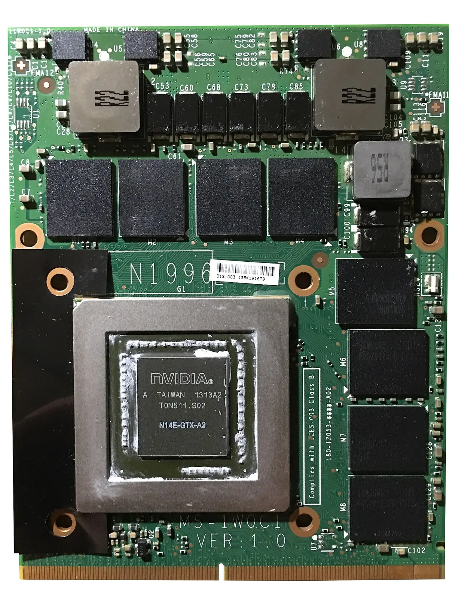

Triage schematic · sheet 07 of 07 · rev 2026-07-30
Which escape hatch
for which kind of leftover?
One pass down the tree per stranded application. Every branch terminates: in a Wine prefix, in a local VM, on someone else's Windows box, on a partition you keep — or, once, in a dead end you should not walk into.
Decision, before the diagram
The tree
Read top to bottom. The first question your app answers yes to is its hatch — the exclusions come first on purpose, because Wine cannot be talked into a kernel.
Narrow screen? The diagram scrolls sideways.
Hatch specifications
The same five terminals, with the numbers and the citations behind them.

Wine, in a Bottles prefix
Wine 11 is the stable branch, and single-window Win32 / older-.NET utilities are the class it serves best [1]. Triage with the AppDB Platinum/Gold/Silver/Bronze/Garbage definitions before committing an evening [2]. Bottles ★ 8.6k [5] is the prefix manager for apps; Lutris ★ 10.1k [12] is the same idea for games.
A local Windows VM
Wine cannot install or usefully run Visual Studio — even when it installs, functionality is
missing wholesale [6].
VMware Workstation Pro has been free for personal and commercial use since Broadcom's
Nov 2024 change, keyless, on Linux
[3].
On QEMU/SPICE, budget the extra hour: SPICE guest tools for a bidirectional clipboard, then
phodav/spice-webdavd inside the guest before guest→host file sharing works
[14]. GNOME Boxes is the same
stack with fewer knobs; virt-manager exposes the settings you will actually need.
Remote Windows: VDI, RDP, Cloud PC
The Office + VPN + SSMS cluster is one workload, and it belongs on a machine someone else patches. Windows 365 dropped 20% on 1 May 2026 to $28–56 per user per month, productivity apps excluded [10]. For occasional use against a box you already have, WinApps ★ 15.7k renders Windows apps as seamless windows next to your Linux ones over FreeRDP [9] — no guest desktop to stare at.
Keep the partition
Firmware and kernel-driver tools — Lenovo Vantage, XTU, QuantumENGINE, X-Rite Color Assistant, SENetFilter, Sandboxie — are drivers, not applications. Wine has no kernel-mode driver stack, so this branch was never a Wine branch. When the leftover list is down to three things you touch monthly, 120 GB of NVMe beats every hatch above it on both cost and hours.
No hatch at all
Stardock Fences, DisplayFusion, AutoHotkey, ShareX, Ditto, the Beyond Compare shell extension: these hook Explorer and global input. A Wine prefix has no host desktop to integrate with, so there is nothing for them to hook. Replace natively — that work is in the desktop-shell and utility-belt sheets — or drop the habit.
Terminated branches
Three routes that look like hatches on paper and are not. Marked so future-you does not rediscover them at 1 a.m.

dGPU VFIO passthrough
Muxless: the NVIDIA chip drives no panel, so the guest caps at 640×480 and the driver won't form Optimus with a virtual iGPU. Custom UEFI, extracted vBIOS, ACPI patching — the guide's own author says to do it "purely for the fun of tinkering… not for anything important" [4]. A Legion 5 Pro attempt got video, and Windows still never recognised the RTX 3060M as NVIDIA hardware [15].
virtio-gpu / Venus for a Windows guest
Venus Vulkan over virtio-gpu is mature for Linux guests; the Windows-guest OpenGL/Direct3D driver is still work in progress [16]. For Visual Studio, use VMware's mature Windows guest driver [3] or RDP into the VM rather than fighting the display path.
Wine for anything with a service
The Lenovo / JBL / X-Rite / VPN cluster ships services and filter drivers. No amount of
winetricks adds a kernel. This is the one branch where more effort buys strictly
nothing — recognise it at question 01 and walk to the partition.
Bill of materials
What the whole escape-hatch layer costs if you build every branch you actually need.